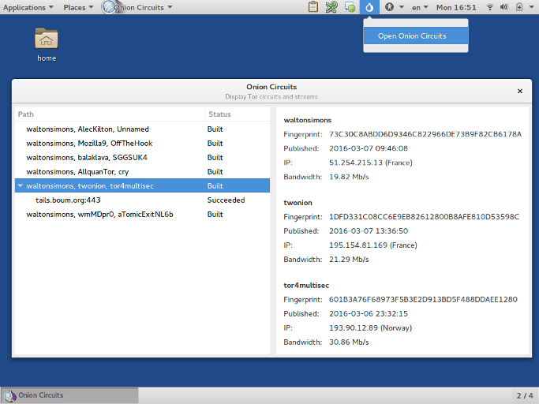

This release fixes many security issues and users should upgrade as soon as possible.
Changes
New features
- Add support for viewing DVDs with DRM protection. (#7674)
Upgrades and changes
- Replace Vidalia, which has been unmaintained for years, with:
- a system status icon indicating whether Tails is connected to Tor or not,
- Onion Circuits to display a list of the current Tor circuits and connections.

Automatically save the database of KeePassX after every change to prevent data loss when shutting down. (#11147)
Update Tor Browser to 5.5.3.
- Improve Japanese-style glyph display.
Upgrade I2P to 0.9.24.
Disable the Alt + Shift and Left Shift + Right Shift keyboard shortcuts that used to switch to the next keyboard layout. You can still use Meta + Space to change keyboard layout. (#11042)
Fixed problems
Fix optional PGP key feature of WhisperBack. (#11033)
Fix saving of WhisperBack report to a file when offline. (#11133)
Make Git verify the integrity of transferred objects. (#11107)
For more details, see also our changelog.
Known issues
While there is an automatic upgrade from Tails 2.2~rc1 to 2.2, it will not be detected by default since Tails 2.2~rc1 think it already is 2.2 (see the 2.2~rc1 announcement). To fix this, run the following command:
sudo sed -i 's/^TAILS_VERSION_ID="2.2"$/TAILS_VERSION_ID="2.2~rc1"/' \ /etc/os-release && \ tails-upgrade-frontend-wrapperSee the current list of known issues.
Install or upgrade
To install, follow our installation instructions.
An automatic upgrade is available from 2.0.1 to 2.2.
If it is impossible to automatically upgrade your Tails, read our upgrade instructions.
If your Tails fails to start after an automatic upgrade, please try to do a manual upgrade.
What's coming up?
The next Tails release is scheduled for April 19.
Have a look at our roadmap to see where we are heading to.
We need your help and there are many ways to contribute to Tails (donating is only one of them). Come talk to us!